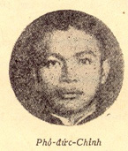

Chương XXXVI

hó Đức Chính quê ở Đa Ngưu. Tốt nghiệp ở công chính ra, anh được bổ sang Lào. Năm 1929 việc Đảng tiết lộ, anh bị bắt khi ở Lào về. Anh kém anh Học bảy tuổi, năm ấy mới vừa đúng hai mươi.

Coi là trẻ con, Bờ-rít tha cho miễn nghị, được tha rồi, Anh trả hết cả những món kỷ niệm cho người vị hôn thê là cô Thắm ở Thanh Hoá. Một tuần sau, Anh lại bị bắt ở một cơ quan với các đồng chí, nhưng rồi lại được tha. Anh đã nói dối là ở nhà quê về Hà Nội cần thuốc, ngẫu nhiên gặp bạn cũ mới vào chơi, chứ không có chuyện gì cả. Kỳ thực thì từ khi ở Lào về, Anh làm việc Đảng rất hăng hái. Không mấy khi là anh không ở bên cạnh anh Học hay anh Song Khê.
Chúng ta đã rõ Anh với việc khởi nghĩa Yên Bái là thế nào. Cố nhiên những chỉ huy trong lúc đánh là mấy anh cai Nguyễn Thanh Thuyết, Ngô Hải Hoàng… là mấy anh Đồ Thuý, Giáo Liên, Nguyễn Văn Khôi… thế nhưng tất cả các những anh ấy đều thuộc dưới quyền anh tiết chế.
Việc Yên Bái thất bại rồi, cái hùng tâm của anh vẫn chưa chịu chết!
Anh cùng các đồng chí ở Yên Bái thoát vòng vây ra được, lập tức lại đi liên lạc các anh em, tìm tòi lấy thực lực, định hạ thành Sơn Tây. Thế nhưng “tính việc ở người, thành việc ở trời”.
Ngày 13, bao nhiêu bom, dao để ở Quảng Húc đều bị quân địch khám, bắt đem đi. Rồi chiều ngày 15 anh cùng Cai Tân, Nguyễn Văn Khôi đương bàn việc ở nhà anh Quản Tranh tại làng Nam An, tổng Cẩm Thượng thuộc huyện Tùng Thiện, thì bị chúng bao vây và bắt trói, rồi giải về Hà Nội…
Khi toà án của quân địch đã khép Anh tử hình rồi, tên chủ tịch Đề hình hỏi anh có xin chống án không?
Thì anh cười và đáp:
- Đời con người ta làm có một việc, hỏng cả một việc, sống nữa mà làm chi?
Tính ra Anh ở đời khoảng chừng hai mươi mốt nărn trời. Thế nhưng tôi tin rằng linh hồn Anh đã hoà hợp với Quốc hồn mà cùng với non sông cùng thọ.